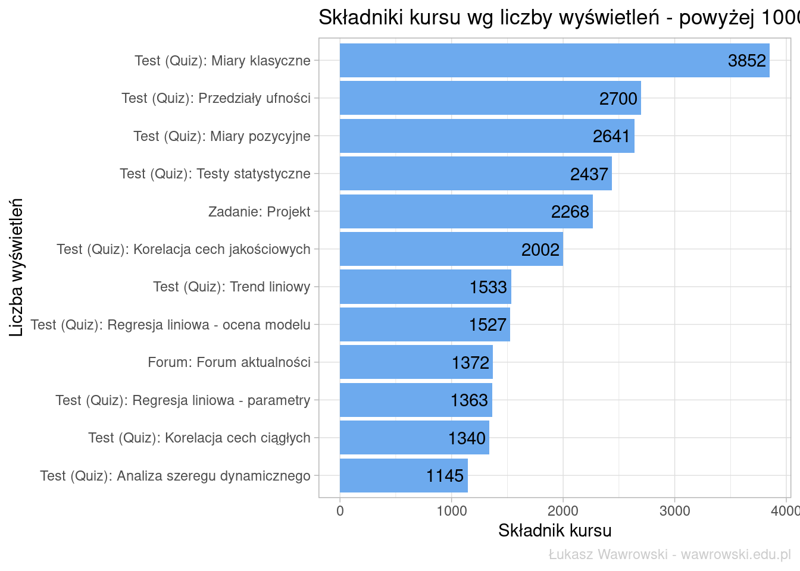
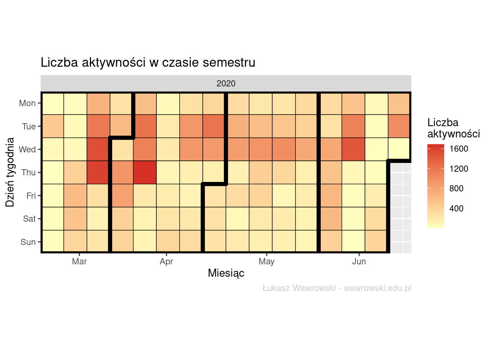

Dydaktyka w czasie pandemii - analiza logów z systemu moodle
Analiza aktywności studentów na podstawie logów systemu moodle.
Author
Łukasz Wawrowski
Published
June 26, 2020
W semestrze letnim roku akademickiego 2019/2020 miałem okazję prowadzić przedmiot Statystyka na kierunku Rachunkowość i Finanse Przedsiębiorstw. Pandemia COVID19 spowodowała, że większość nauczycieli musiała z dnia na dzień zmienić sposób prowadzenia zajęć ze stacjonarnego na zdalny. Trzeba było szybko przestawić się na nowy tryb nauki i znaleźć optymalny sposób prowadzenia zajęć oraz metodę weryfikacji umiejętności studentów. W moim przypadku zdecydowałem się na nagrywanie screencastów - widok ekranu komputera z komentarzem głosowym. Przy okazji doskonaliłem skrypt ze statystyki. Elementem weryfikacji wiedzy były quizy stworzone za pomocą świetnego pakietu exams. Dodatkowo na zakończenie semestru studenci mieli przygotować prosty projekt dotyczący regresji liniowej.
Wszystkie wyżej wymienione elementy umieszczałem na platformie moodle. System ten zbiera informacje o wszystkich aktywnościach użytkowników i analiza tych aktywności będzie tematem tego wpisu.
Przygotowanie danych
Raport aktywności z systemu moodle zawiera następujące elementy:
stempel czasu,
twórcę aktywności,
kogo ta aktywność dotyczyła,
kontekst zdarzenia,
składnik,
nazwa zdarzenia,
opis,
pochodzenia (strona internetowa lub inne),
adres IP.
W ciągu semestru 83 studentów oraz ja wygenerowaliśmy 49264 różnych aktywności. Oryginalny zbiór danych zawierał dane osobowe, zatem przeprowadziłem anomizację i w miejsce imion i nazwisk wstawiłem losowe ciągi znaków. Zostawiłem tylko swoje inicjały, żeby odróżnić aktywności nauczyciela od aktywności studentów.
Analiza częstości
Do analizy przydadzą się trzy pakiety: tidyverse - do przetwarzania i wizualizacji, lubridate - do operacji na datach oraz ggTimeSeries - do wizualizacji kalendarza. Na pierwszy ogień weźmy najczęściej wyświetlany typ składnika kursu.
Na pierwszym miejscu jest Test (Quiz), który studenci musieli rozwiązać, aby uzyskać punkty niezbędne do zaliczenia przedmiotu. System na drugim miejscu to wyświetlenie strony kursu. Adres URL zawierał link do skryptów oraz screencastów, natomiast Plik to plik Excela zawierający rozwiązanie omawianego problemu. Zadanie to z kolei zasób z projektem.
Sprawdźmy zatem jaki konkretny składnik kursu był najczęściej klikany.
logs_anonim %>%filter(nazwa_anonim !="ŁW") %>%filter(kontekst_zdarzenia !="Kurs: Statystyka - stacj. I st. - RiFP - (lab.) - dr Łukasz Wawrowski") %>%count(kontekst_zdarzenia) %>%mutate(kontekst_zdarzenia=gsub(" - quiz", "", kontekst_zdarzenia)) %>%filter(n >1000) %>%mutate(kontekst_zdarzenia=fct_reorder(kontekst_zdarzenia,n)) %>%ggplot(aes(x=kontekst_zdarzenia, y=n)) +geom_col(fill ="#6daaee") +geom_text(aes(label = n), hjust =1.1) +xlab("Liczba wyświetleń") +ylab("Składnik kursu") +coord_flip() +ggtitle("Składniki kursu wg liczby wyświetleń - powyżej 1000") +labs(caption ="Łukasz Wawrowski - wawrowski.edu.pl") +theme_light() +theme(plot.caption =element_text(color ="grey80"))

Niespodzianek nie ma - najczęściej wyświetlane były quizy. Studenci najpierw odwiedzali ten zasób, żeby quiz rozwiązać, a po tygodniu, żeby sprawdzić poprawność odpowiedzi. Pierwsze 4 miejsca to 4 tygodnie zajęć od rozpoczęcia pandemii. Na piątym miejscu jest projekt zaliczeniowy.
Materiały z jakiego tematu były najczęściej otwierane? Poniżej analiza częstości wyłącznie adresów URL.
Na pierwszym miejscu link do konkretnego rozdziału skryptu poświęconemu miarom klasycznym. Jedna wyświetlenie mniej ma cały skrypt. Dwa następne miejsca to przedziały ufności. Kolejne pozycje pokazują, że studenci woleli oglądać screencast aniżeli czytać rozdział skryptu.
Analiza czasowa
Zajęcia w planie zajęć miałem zaplanowane na wtorki i zawsze starałem się tego dnia udostępnić materiały z nowego tematu. Niestety dwa razy mi się to nie udało - zajęcia zostały udostępnione w środę. Zobaczmy jak wyglądała aktywność studentów w tygodniu przed pandemią, kiedy zajęcia odbyły się stacjonarnie po raz ostatni - 9-15.03.2020.
Widać wyraźnie, że aktywność studentów rozłożyła się na pozostałe dni tygodnia. Szczególnie na poniedziałek i wtorek, kiedy mijał termin rozwiązania quizu. Aktywność w całym semestrze widoczna jest poniżej.
Na zakończenie wizualizacja tych danych w formie kalendarza.
logs_anonim %>%filter(nazwa_anonim !="ŁW", czas >="2020-03-09 00:00:00") %>%mutate(dzien=ymd(format(round(czas, units="days"), format="%Y-%m-%d"))) %>%count(dzien) %>% ggTimeSeries::ggplot_calendar_heatmap(dtDateValue = ., cDateColumnName ="dzien", cValueColumnName ="n") +scale_fill_continuous(low ="#ffffbf", high ="#d73027", name ="Liczba\naktywności") +xlab("Miesiąc") +ylab("Dzień tygodnia") +ggtitle("Liczba aktywności w czasie semestru") +labs(caption ="Łukasz Wawrowski - wawrowski.edu.pl") +theme(plot.caption =element_text(color ="grey80"))

Na tej wizualizacji wyraźnie widać większą aktywność w środy - w ten dzień były publikowane wyniki z quizu. Czerwone kwadraty w czwartki w marcu i kwietniu wskazują na realizację trudniejszych zagadnień i próby prawidłowego rozwiązania quizu. Z kolei 9 czerwca upływał termin złożenia projektu i widać wyraźną mobilizację już od trzeciego czerwca. W ostatnim analizowanym tygodniu odbył się egzamin i także można zaobserwować większą aktywność studentów w poprzedzających dniach.
Podsumowanie
Dane z logów systemu moodle pozwalają na całkiem ciekawą analizę zachowań. Można to zrobić globalnie albo analizować konkretnego studenta. Jeżeli zajęcia w kolejnym roku akademickim będą odbywały się stacjonarnie to będzie okazja do analizy porównawczej.